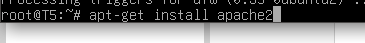
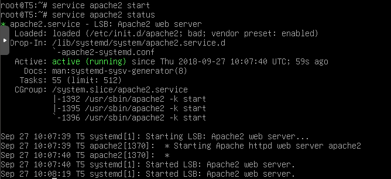
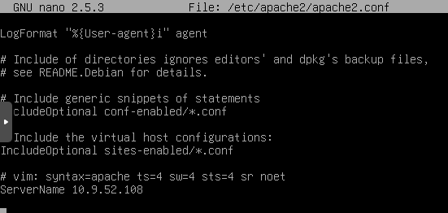

¿Qué es Apache?
Apache es un poderoso servidor web, cuyo nombre proviene de la frase inglesa “a patchy server” y es completamente libre, ya que es un software Open Source y con licencia GPL. Una de las ventajas más grandes de Apache, es que es un servidor web multiplataforma, es decir, puede trabajar con diferentes sistemas operativos y mantener su excelente rendimiento.Desde el año 1996, es el servidor web más popular del mundo, debido a su estabilidad y seguridad. Apache sigue siendo desarrollado por la comunidad de usuarios desarrolladores que trabaja bajo la tutela de Apache Software Foundation.
Entre las principales características de Apache, se encuentran las siguientes:
- Soporte de seguridad SSL y TLS.
- Puede realizar autentificación de datos utilizando SGDB.
- Puede dar soporte a diferentes lenguajes, como Perl, PHP, Python y tcl.
Apache es utilizado principalmente, para realizar servicio a páginas web, ya sean estáticas o dinámicas. Este estupendo servidor se integra a la perfección con otras aplicaciones, creando el famoso paquete XAMP con Perl, Python, MySQL y PHP, junto a cualquier sistema operativo, que por lo general es Linux, Windows o Mac OS.
¿Cómo instalar Apache?
¿Cómo instalar Apache?
Para instalar Apache, nos dirigiremos al servidor Ubuntu y abriremos la terminal. Una vez ahí, ejecutaremos los siguientes comandos:
- El primer paso es actualizar los repositorios de Ubuntu server. sudo apt-get update
- Ahora procederemos a instalar Apache. sudo apt-get install apache2 
- Una vez instalado, lo iniciamos. sudo service apache2 start Si queremos verificar en que estado se encuentra Apache, ejecutaremos el siguiente comando. sudo service apache2 status 
- Ahora vamos a configurar Apache para usarlo con Ubuntu server. nano /etc/apache2/apache2.conf Una vez dentro del archivo, bajamos hasta abajo del todo y escribimos lo siguiente. ServerName 10.9.52.108 
- Una vez esté iniciado, iremos al navegador y pondremos la dirección IP (10.9.52.108) Tendremos que ver la página por defecto de Apache en Ubuntu:
- En este video se realiza el proceso desde 0.


¿Qué requisitos necesitamos?
- Linux kernel version 2.4 o posterior, glibc2 version 2.3.2 o posterior (inicio con OOo 3.3 glibc2 version 2.5 o mayor) 256 Mbytes RAM (512 MB recomendado)
- Espacio de disco de 400 Mbytes
- X-Server con 1024 x 768 o mayor resolucion con 256 colores